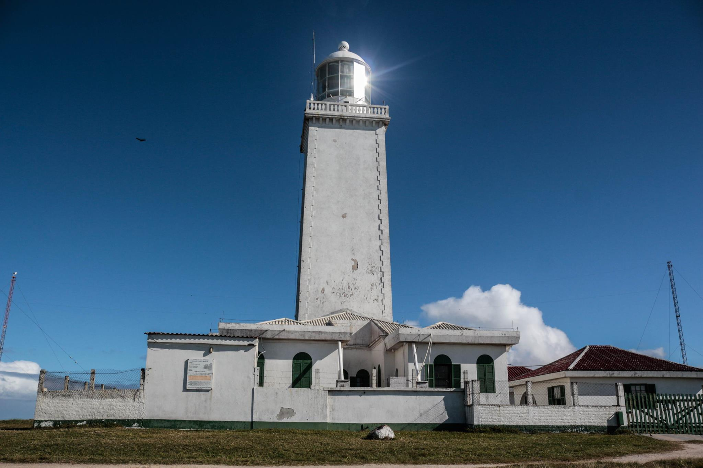

Farol Santa Marta - SC

Sobre:
Localizado no Cabo de Santa Marta, em Laguna, no estado de Santa Catarina, o farol de Santa Marta possui uma estrutura de torre quadrada, em pedra com lanterna e galeria. Suas paredes possuem 2 metros de espessura. O farol eleva-se
em meio a um grupo de casas térreas de faroleiros e outros edifícios. Além de ser localizado no ponto mais oriental da região, desde o século XIX o farol serviu para guiar as embarcações para longe da famosa Pedra (ou Parcel) do Campo
Bom. Apesar disso, alguns naufrágios chegaram a ocorrer.No topo de um morro, num pequeno promontório, a 45 metros acima do nível do mar, está localizado o Farol, a maior atração local. Com 29 metros de altura, é um dos mais potentes do
Brasil em alcance e serve como guia para os navios que se aproximam do Cabo. No período noturno, a iluminação do Farol chama a atenção. O seu alcance é de quarenta e seis milhas náuticas (oitenta e cinco quilômetros). fonte: (wikipedia.org).
mapa
video
Farol de Torres - RS

Sobre:
Em 1952 o terceiro farol foi construído com uma torre de concreto, tijolo e argamassa para permanecer mais tempo.
Embora substituído pelo quarto e último farol em 1993, ele ainda está na torre norte servindo para propósitos não menos importantes.
O quarto farol na verdade ocupa a antiga torre da CRT e com certeza é o menos expressivo embora seja o mais alto de todos.
O Farol de Torres teve como um de seus faroleiros Easthewaldo Gançalves que por quarenta e seis anos foi o guardião que dedicou parte de sua
vida por zelar esse histórico farol.
O farol atual tem 18 metros de altura, acendendo de 8 em 8 segundos. Pode ser visto em noites claras a uma distância de 8 milhas nauticas ou 12 quilômetros.
Fonte e direitos ( e o bixo pegando.)
mapa
video
Faról de Chui - RS

Sobre:
O Farol da Barra do Chuí está situado na desembocadura do Arroio Chuí (do qual recebe o nome) no balneário da Barra do Chuí, pertencente
ao município gaúcho de Santa Vitória do Palmar, no extremo sul do Brasil, próximo à fronteira com o Uruguai.
O farol antigo foi fundado em 1910, logo sendo substituído por um novo obedecendo aos padrões do ano de 1949. Hoje em dia é considerado o farol
mais avançado do Brasil. Possui iluminação automática e "Rádio Farol " com alcance de 30 milhas.
Torre troncônica em concreto, com 4 estreitas longarinas laterais. Lanterna e galeria dupla. Farol pintado com faixas horizontais brancas e vermelhas.
Quatro edifícios térreos em anexo . fonte: (wikpedia).
mapa
video